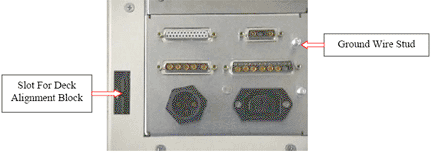

Operating Documentation
Direction 5440000, Rev# 5
Module Version 1.0, Version Date 4/26/07
Operating Documentation |
| ||||
| Electrical Shock. | ||||
| LETHAL VOLTAGES ARE PRESENT INSIDE THE POWER SUPPLY AND RF DECKS! | ||||
| BEFORE REMOVING ANY EQUIPMENT COVER Lock Out/Tag Out the RF Cabinet, UNPLUG OR DISABLE THE AC MAINS SUPPLY, AND WAIT AT LEAST THREE MINUTES TO ALLOW THE POWER SUPPLIES TO DISCHARGE COMPLETELY! DO NOT TOUCH ANYTHING INSIDE THE AMPLIFIER UNTIL THE ITEM YOU MUST HANDLE IS SPECIFICALLY DISCHARGED WITH A KNOWN-FUNCTIONAL DEVICE SUCH AS A CHASSIS-CONNECTED SHORTING STICK OR SIMILAR! |
| Condition | Reference | Effectivity |
|---|---|---|
Many components within the amplifier are static sensitive! Take appropriate precautions when removing or installing any system part. Be sure to use appropriate ESD equipment. | - | - |
| ||||
| Electrical Shock. | ||||
| LETHAL VOLTAGES ARE PRESENT INSIDE THE POWER SUPPLY AND RF DECKS! | ||||
| BEFORE REMOVING ANY EQUIPMENT COVER Lock Out/Tag Out the RF Cabinet, UNPLUG OR DISABLE THE AC MAINS SUPPLY, AND WAIT AT LEAST THREE MINUTES TO ALLOW THE POWER SUPPLIES TO DISCHARGE COMPLETELY! DO NOT TOUCH ANYTHING INSIDE THE AMPLIFIER UNTIL THE ITEM YOU MUST HANDLE IS SPECIFICALLY DISCHARGED WITH A KNOWN-FUNCTIONAL DEVICE SUCH AS A CHASSIS-CONNECTED SHORTING STICK OR SIMILAR! |
Prepare for shutdown of equipment. Notify affected personnel working in the area that LOTO is being performed.
At the front panel of the PDU, flip the RFI / Amp circuit breaker switch to the OFF position.
Lockout/Tagout the Breaker Panel on the PDU.
On the front of the RF Cabinet, locate the CB-1 circuit breaker and place in the OFF position.
| NOTE: | If the amplifier was ON, then turned OFF, the fans continue to run for approximately one minute to allow the amplifier to cool down. |
Verify the amplifier is OFF.
Verify the fans are not running.
Allow at least three minutes for all high-voltage power supplies to discharge.
The individual decks, the upper RF and the lower Power Supply, must be separated from each other for individual replacement.
| ||||
| Many components within the amplifier are static sensitive! Take appropriate precautions when removing or installing any system part. Be sure to use appropriate ESD equipment. | ||||
While the high voltage is discharging disconnect all cabling, including the mains supply, from the amplifier.
| NOTE: | The RF (upper) deck is essentially a rectangular box. Along its bottom edge, at each corner, it is fitted with short length alignment block “legs”. These alignment blocks protrude down ward. The alignment blocks serve two purposes. They provide indexing anchor points to secure the upper RF deck to the lower Power Supply deck, and, when the deck is removed, they serve as legs to allow the deck to be set on a flat floor or table without causing damage to critical wire harness connectors. |
Locate and remove the single indexing bolt from each of the four RF deck bottom-corner alignment blocks. They are shown in Illustration 2.
Remove the top cover from the RF deck.
Remove the left-side panel from the RF deck. Several RF deck wire harness connectors must be unplugged from mating sockets located on the top left corner of the Power Supply deck. The connectors are shown in Illustration 3. Adjacent to the connectors is a single insulated green-yellow ground wire attached to a chassis stud. This wire must also be removed. It is shown in detail in Illustration 3.
| ||||
| Lifting hazard. | ||||
| The RF Deck is heavy! | ||||
| Its removal requires two persons! |
| NOTE: | Once the connectors are unmated move them away from the opening in the “floor” of the RF deck. It may be necessary to temporarily tie the connectors so that they cannot drop through the opening. Once the deck is lifted from the Power Supply deck the connectors cannot be allowed to dangle below or they may be damaged when the deck is set down. |
Handles are attached to the front- and rear-panels. Use them to lift the RF deck from the Power Supply deck. Carefully set the RF deck aside.
At this time replace the failed unit, either the upper RF Deck or the lower Power Supply Deck.
Atop the Power Supply deck is a single connector panel. RF deck harness plugs are inserted into the panel after the decks are combined. The panel is shown in Illustration 4. Also shown in Illustration 4 is an adjacent slot that accommodates one of the four RF deck alignment blocks. (The blocks are located at each bottom corner of the RF deck.)
Illustration 4: Power Supply Deck Harness Connectors

| NOTE: | The connector receptacle pins are fragile and can easily be damaged. Each pin will be clearly visible on the panel. Each pin should be inspected before the RF deck is placed atop the PS deck. IF THE MATING HARNESS CONNECTORS ARE INSTALLED INCORRECTLY THE FRAGILE RECEPTACLE PINS WILL BE DAMAGED. Damaged pins cannot be individually repaired. A deck with damaged connector pins must be returned to the factory for repair. |
Lift the RF deck into place atop the Power Supply deck. The RF deck alignment blocks must be inserted into their respective slots atop the Power Supply deck.
Reinstall the deck indexing bolts.
Remove the top and left side panels from the RF deck cabinet.
Connect the yellow-green insulated wire to the ground wire stud shown in Illustration 4. Mate each of the RF deck wire harness connectors with its appropriate Power Supply deck receptacle.
Replace the left side and top panels on the RF deck cabinet.
Remove LOTO from the RF cabinet.
Restore power.
If the upper RF Deck was replaced, perform the Tube Hours Counter Reset procedure.
Perform the following calibrations:
After the Maximum Power Setup perform the final calibration: